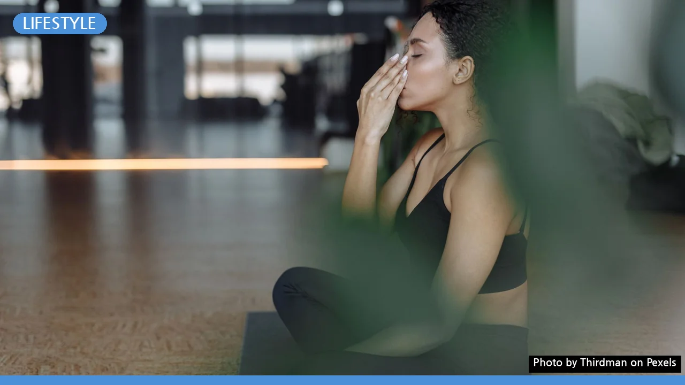

맨날 나만 상처받는 인간관계? 스트레스 줄이는 4가지 실천법
사진: Thirdman / Pexels (무료 이미지, 출처 표기)
직장, 학교, 심지어 오래 알고 지낸 친구 사이에서도 인간관계는 늘 마음처럼 쉽지 않습니다. 매번 나만 참고 상대방에게 맞춰주는 것 같아 속상하셨나요? 모든 사람에게 좋은 사람이 되려고 애쓸 필요는 없습니다. 내 마음의 평화를 지키면서도 매끄럽게 관계를 유지하는 현실적인 스트레스 관리법을 소개합니다.
1. 내 에너지를 갉아먹는 관계 유형 진단하기
어떤 관계에서 유독 스트레스를 받는지 객관적으로 파악하는 것이 첫걸음입니다. 만남 뒤에 왠지 모르게 진이 빠지고 기분이 가라앉는다면 다음과 같은 피로 유발 요인이 있는지 점검해 보세요.
- 대화의 대부분이 상대방의 불평불만이나 자기자랑으로만 채워진다.
- 나의 사생활 영역이나 감정적 한계선(경계선)을 자꾸 넘나든다.
- 도움을 당연하게 여기며, 가벼운 지적이나 비난을 일삼는다.
- 만나고 돌아오는 길에 공허함이나 자책감이 든다.
이러한 징후가 반복된다면 상대방의 성향을 바꾸려 애쓰기보다, 내가 취할 수 있는 현실적인 방어 기제를 작동시켜야 할 때입니다.
2. 관계 스트레스를 줄이는 4단계 거리두기
현실적으로 모든 인연을 한순간에 끊어내기는 어렵습니다. 특히 직장 동료나 가족처럼 매일 마주해야 하는 사이라면 물리적 단절보다 '심리적 거리두기' 단계별 전략이 훨씬 유용합니다.
거리두기를 실행할 때는 상대방을 적대적으로 대하기보다 바쁜 일정을 핑계 삼아 자연스럽게 접촉 빈도를 줄여나가는 편이 불필요한 갈등을 예방하는 데 안전합니다.
3. 부드럽지만 단호하게, '나-전달법' 대화 공식
부탁이나 무리한 요구를 거절하지 못해 속앓이를 하는 경우가 많습니다. 이때 상대방의 기분을 해치지 않으면서 내 의사를 명확히 전달하는 대화 기법이 바로 '나-전달법(I-Message)'입니다. 상대의 행동을 비난하지 않고 내 처지와 감정에 초점을 맞추어 말하는 방식입니다.
[나-전달법 3단계 공식]
- 객관적 사실 말하기: 상대방의 행동이나 상황을 있는 그대로 언급합니다. (예: "오늘 저녁에 갑자기 급한 업무 대행을 요청하셨네요.")
- 나의 구체적 상황 설명: 내가 처한 제약 사항을 명확히 밝힙니다. (예: "제가 오늘 밤까지 마무리해야 하는 개인 기획안 작성이 있습니다.")
- 대안 및 감정 전달: 거절의 미안함과 함께 대안을 제시합니다. (예: "직접 도와드리지 못해 아쉽지만, 내일 오전 중에는 시간 조율이 가능합니다.")
이 방식으로 말하면 상대를 자극하지 않으면서도 나의 명확한 한계를 상대방에게 인지시킬 수 있습니다.
4. 마음의 짐을 덜어주는 '감정 정리 노트' 작성법
풀리지 않는 인간관계 스트레스가 머릿속에서 맴돌 때는 글로 써서 감정을 시각화하는 과정이 큰 도움이 됩니다. 정신의학계에서도 권장하는 감정 기록법은 복잡한 마음을 한 걸음 물러서서 바라보게 만듭니다.
메모지를 꺼내 현재 나를 괴롭히는 인물과 사건을 적어보세요. 그다음 '내가 통제할 수 있는 일'과 '통제할 수 없는 일'의 구역을 나눕니다. 상대방의 무례한 태도나 리액션은 내가 통제할 수 없는 영역입니다. 반면, 상대방의 말에 반응하는 나의 태도와 만남 빈도를 조절하는 일은 내가 통제할 수 있는 영역입니다. 내가 바꿀 수 있는 구체적인 행동에만 집중할 때 스트레스의 크기는 눈에 띄게 줄어듭니다.
5. 혼자 해결하기 힘들 때의 대처 요령과 주의사항
타인의 감정과 평가는 내가 온전히 통제할 수 없다는 사실을 인정하는 것만으로도 마음이 한결 가벼워집니다. 미움받을 용기란 결국 내 삶의 주도권을 남이 아닌 나에게 두는 연습입니다.
다만, 이러한 자가 노력에도 불구하고 불면증, 불안감, 극심한 우울감 등 신체적·정신적 이상 증상이 2주 이상 지속된다면 전문가의 조력을 고려해야 합니다. 가까운 정신건강의학과를 방문하거나 지자체에서 운영하는 지역 정신건강복지센터를 통해 전문 상담을 받아보시는 것을 적극 권장합니다. 내 마음을 지키는 것은 이기적인 행동이 아니라 건강한 삶을 위한 당연한 의무입니다.
🔗 이 글도 함께 보면 좋아요: 친환경 세제 고르는 법, '진짜'와 '가짜' 구별하는 3가지 기준
관련 추천 상품
이 포스팅은 쿠팡 파트너스 활동의 일환으로, 이에 따른 일정액의 수수료를 제공받습니다.
한눈에 보는 상품 목록
하루 5분 감정 일기장
미움받을 용기 (도서)